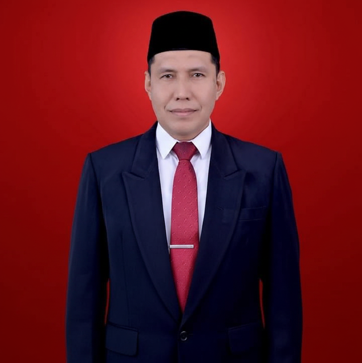

Managing Partner
Boiziardi.AS, S.H., M.H., CPM.
Seorang praktisi hukum dan akademisi yang berbasis di Padang, dengan spektrum keahlian luas mencakup Hukum Pidana, Perdata, dan Tata Usaha Negara (TUN). Saya menawarkan solusi hukum yang komprehensif, strategis, dan beretika dengan memadukan kedalaman teori hukum sebagai pengajar di Universitas Tamansiswa Padang dengan pengalaman praktis sebagai Mantan Komisioner KPU Kota Padang. Beliau juga merupakan seorang Mediator Non-Hakim Bersertifikat (Dewan Sengketa Indonesia), yang berfokus pada penyelesaian sengketa melalui jalur mediasi yang efektif dan efisien serta berkekuatan hukum tetap. Dalam dunia profesi advokat, saya tergabung sebagai anggota PERADI (Suara Advokat Indonesia), yang menjamin standar profesionalisme dan kode etik dalam setiap pelayanan hukum yang saya berikan.

Senior Partner
AKBP (Purn) Adma Yulza, S.H., M.H.
Seorang praktisi hukum dengan pengalaman di baris terdepan kepolisian, khususnya dalam lingkup Polda Sumatera Barat. Sebagai mantan Komandan Densus 88 Wilayah Sumbar dan Kasubdit 1 Ditreskrimum, beliau memiliki pemahaman mendalam mengenai sistem peradilan pidana dari sisi hulu hingga hilir. Kini, beliau mendedikasikan keahlian strategis dan pemahaman prosedural untuk memberikan pembelaan hukum yang tangguh, terukur, dan beretika bagi klien yang menghadapi permasalahan khususnya pada hukum pidana.

Junior Partner
Andre Prima, S.H.
Seorang praktisi hukum senior dengan pengalaman dalam menangani kompleksitas hukum perdata di Indonesia. Sebagai Senior Partner, ia telah memimpin berbagai litigasi bernilai tinggi dan negosiasi transaksional yang rumit, menjembatani kepentingan komersial dengan kepatuhan hukum yang ketat. Dikenal karena ketajaman analitisnya dalam membedah kasus dan dedikasinya dalam menjaga integritas profesi advokat.

Junior Partner
Ahmad Rudi, S.H., CPM.
Seorang advokat progresif dan dinamis yang menjabat sebagai Junior Partner, dengan spesialisasi mendalam pada hukum ketenagakerjaan di wilayah Sumatera Barat. Dikenal karena pendekatannya yang taktis dan solutif, beliau memiliki kemampuan luar biasa dalam menjembatani kebijakan manajemen dengan dinamika tenaga kerja di lapangan. Dengan pengalaman ekstensif dalam menangani berbagai sengketa industrial di tingkat lokal, beliau adalah aset krusial dalam mitigasi risiko hukum bagi perusahaan yang beroperasi di ranah Minang.

Junior Partner
Mhd Arif Munandar, S.H.
Seorang Junior Partner yang dinamis dengan spesialisasi kuat dalam ranah hukum perdata dan litigasi komersial. Memiliki rekam jejak yang solid dalam menangani berbagai sengketa kontrak, properti, dan perbuatan melawan hukum (PMH) di wilayah Sumatera Barat. Dikenal karena pendekatannya yang detail dalam membedah kasus serta kemampuan strategi hukum yang berorientasi pada hasil, beliau menjadi motor penggerak bagi klien dalam menghadapi tantangan hukum perdata yang kompleks di tingkat regional.